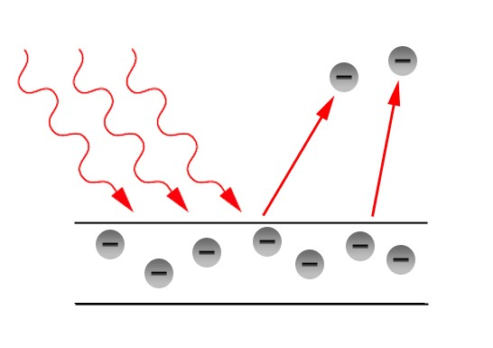

Садржај:
Универзитетска и професорска каријера
Специјална теорија релативности
Фотоефекат је појава где електрони излећу са површине метала када је он изложен електромагнетном зрачењу.
За изазивање фотоефекта обично се користе видљива (оптичка) светлост и ултраљубичаста светлост.
Када се метал осветли, електрони апсорбују енергију светлости и на тај начин повећавају своју кинетичку енергију како би изашли из метала. Миимална енергија коју електрон да би напустио површину метала једнака је излазном раду.
Светлосни сноп усмерен је ка катоди. Електрони које емитује катода, крећу се под дејством електричног поља према аноди. Тако се у колу успоставља електрична струја (фотоелектрична струја).
Енергија сваког апсорбованог фотона који падне на плочу, троши се на излазни рад и кинетичку енергију електрона:
hv=A_i+(m_e V^2)/2
Ова формула представља Ајнштајнову једначину фотоефекта, где је:
hv – енергија фотона
Ai – излазни рад
(m_e V^2)/2 – кинетичка енергија емитованог електрона
Минимална фреквенција светлости за фотоефекат је она при којој је енергија фотона једнака излазном раду, тако да је кинетичка енергија једнака нули.
(m_e V^2)/2=0
hv_0=A_i; v_0=A_i/h - гранична фреквенција фотоефекта односно:
λ_0=c/v_0
λ_0=hc/A_i
Таласна дужина – црвена граница фотоефекта